Install tetoOS (Windows)
This guide walks you from preparing the installation media to finishing the tetoOS setup on your computer.
Important: Pre-Installation Checklist
Please read and perform these critical steps before starting any part of the installation process:
- Clean PC Check: Ensure your PC is completely free from malware or viruses. If you suspect an infection or are unsure, do not install from within the compromised system. Instead, create a bootable USB drive using another clean, trusted computer.
- Disable Security Software: Temporarily disable Windows Defender or any third-party antivirus software while preparing installation files and partition tools, as security software often flags and blocks OS reinstall utilities.
- Rename Drive C to "Install Here": Open File Explorer, right-click Drive C, and rename it to Install Here. This is extremely important so you can easily distinguish it and avoid accidentally formatting or wiping the wrong drive during installation.
1. Choose Installation Method
Select one of the three installation media preparation methods below to expand its step-by-step tutorial:
Recommended Method 1: Ventoy (USB Flash Drive)
First, download the tetoOS ISO file from the Download button, then prepare your bootable USB flash drive using Ventoy (Ventoy Download).
Step-by-Step with Ventoy
1. Select your USB drive: Download Ventoy from official website, extract it, and run Ventoy2Disk.exe. Make sure the target USB drive selected in the Device dropdown is correct.
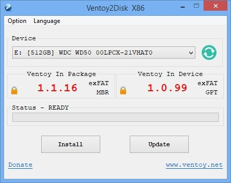
2. Partition Style & Secure Boot: Click the Option menu at the top. Under Partition Style, choose MBR (for Legacy BIOS/UEFI) or GPT (for UEFI). You can also toggle Secure Boot Support according to your motherboard settings.
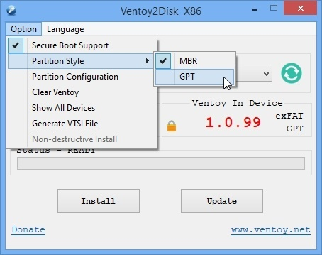
3. Click Install: Click the Install button. A warning prompt will show informing that your USB drive will be formatted and all data erased. Click Yes to confirm.
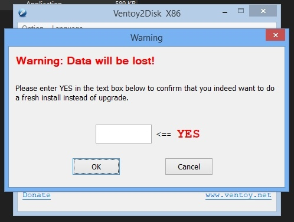
4. Copy ISO into Ventoy: Simply copy and paste the tetoOS .iso file directly into the Ventoy partition. You do not need to extract or re-format anything.
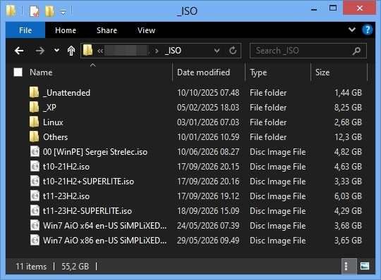
5. Boot into Ventoy: Restart your PC and press your boot menu key (F12, F11, F8, or Esc depending on your motherboard). Select your USB drive, and the Ventoy boot screen will show your ISO list. Select tetoOS to start booting.
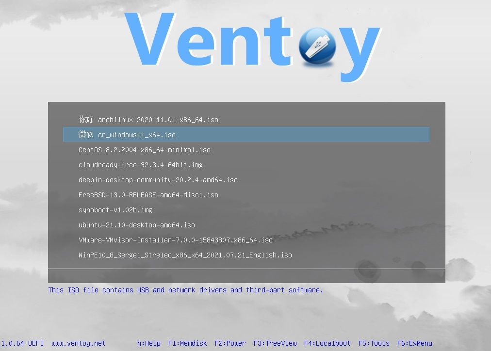
Alternative Method 2: Rufus (USB Flash Drive)
Use version 3.16 (Rufus Older Versions Download). Do not use the latest Rufus: its newer options made for original Windows will conflict with tetoOS and cause the installation to fail.
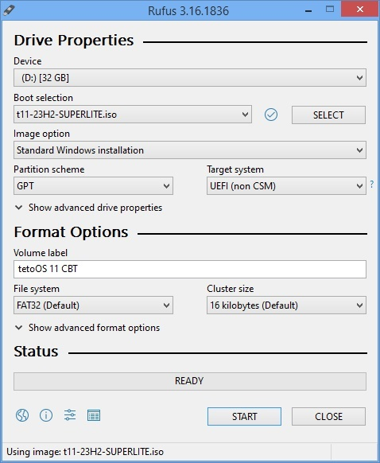
- Device: Select your USB flash drive.
- Boot selection: Click SELECT and browse to your downloaded tetoOS
.isofile. - Image option: Select Standard Windows Installation.
- Partition scheme & Target system:
- For UEFI: Select GPT (Target system: UEFI (non CSM)).
- For Legacy BIOS: Select MBR (Target system: BIOS or UEFI).
- Click START and confirm the warning to write the bootable image.
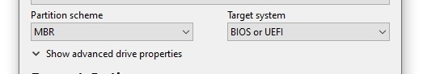
No Flash Drive Method 3: EasyBCD (Direct Hard Drive Partition)
We suggest buying a flash drive and follow the USB method first, it makes installation much easier. If you really can't, you can create a bootable partition on your own HDD/SSD instead using Disk Management and EasyBCD.
Part 1: Creating the Bootable Partition in Disk Management
1. Open Disk Management: Press Win + R on your keyboard to open the Run dialog, type diskmgmt.msc, and click OK (or press Enter).
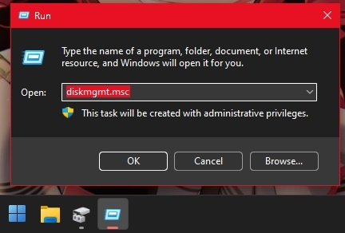
2. Shrink Volume: In the Disk Management window, find your system drive (Drive C:), right-click on it, and select Shrink Volume... from the context menu.
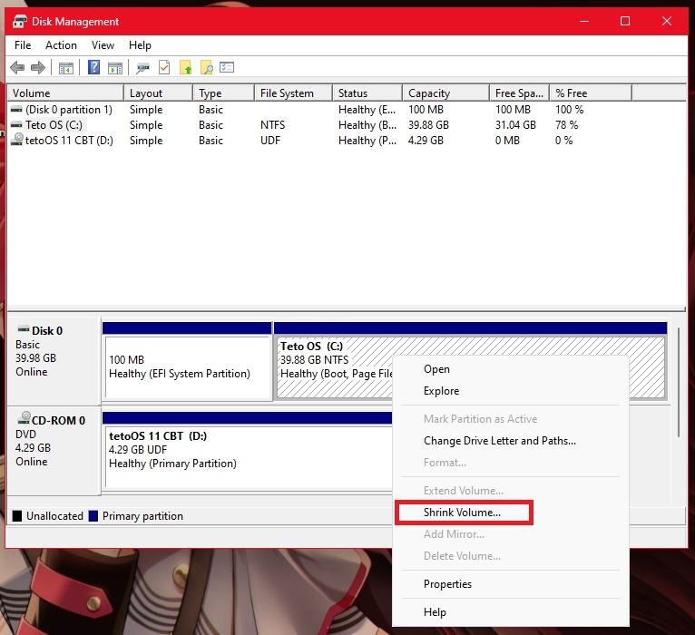
3. Specify Shrink Size (10 GB): In the "Enter the amount of space to shrink in MB" box, type 10000 (around 10 GB), then click the Shrink button at the bottom.
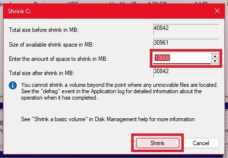
4. Create New Simple Volume: You will now see an "Unallocated" space created (around ~9.77 GB). Right-click on this black unallocated bar, and select New Simple Volume....
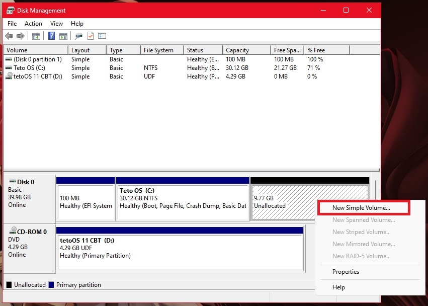
5. Specify Volume Size: In the wizard window, leave the "Simple volume size in MB" at its maximum default value, then click Next >.
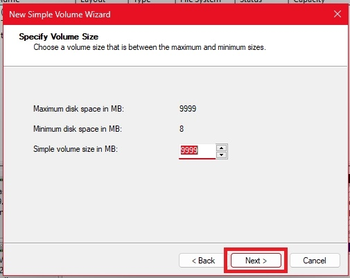
6. Assign Drive Letter: Select "Assign the following drive letter" (e.g. drive E: or any available letter), then click Next >.
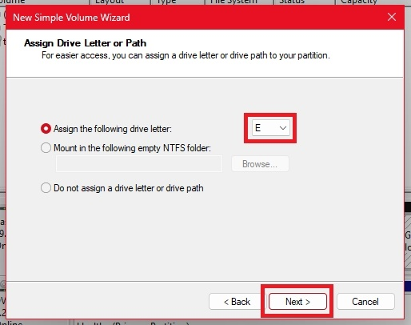
7. Format & Label the Partition: Select "Format this volume with the following settings". Set File system to NTFS, and in Volume label, type Bootable TetoOS. Ensure "Perform a quick format" is checked, then click Next > and finish the wizard.
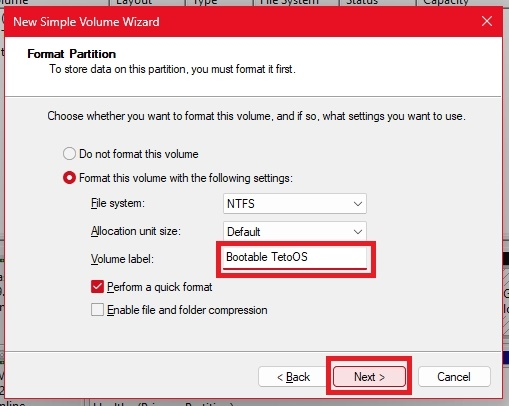
Part 2: Copying ISO Files into the Bootable Partition
8. Mount ISO and Copy All Files: In File Explorer, right-click your downloaded tetoOS ISO file and select Mount. Open the mounted virtual DVD drive, select all files and folders inside (such as boot, efi, sources, bootmgr, etc.), copy them, and paste them into your newly created Bootable TetoOS partition. Wait until copying completes.
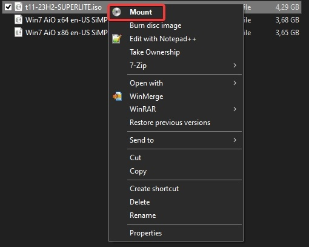
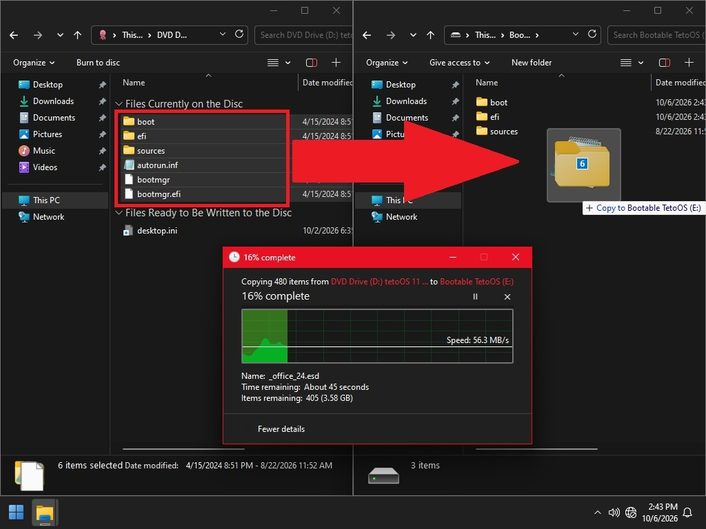
Part 3: Registering Bootloader with EasyBCD
9. Open EasyBCD & Click "Add New Entry": Launch the EasyBCD application from your Desktop or Start menu. In the left toolbox sidebar, click on the Add New Entry button.
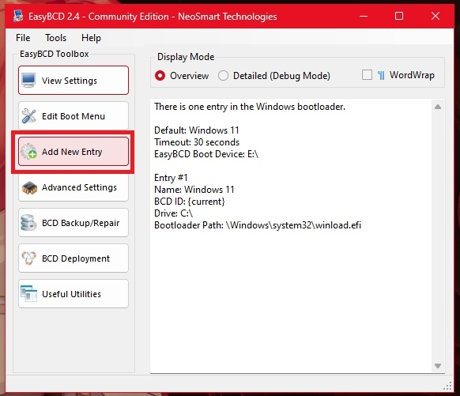
10. Go to WinPE Tab & Set Name: In the lower section under Portable/External Media, click on the WinPE tab. Ensure Type is set to WIM Image (Ramdisk), and in the Name field, type Bootable TetoOS.
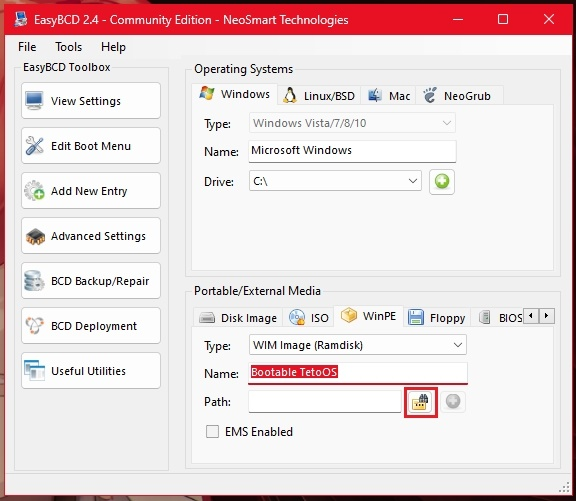
11. Browse and Select boot.wim: In the Path field, click the browse folder icon on the right. Navigate to your Bootable TetoOS drive → open the sources folder → select the boot.wim file, and click Open.
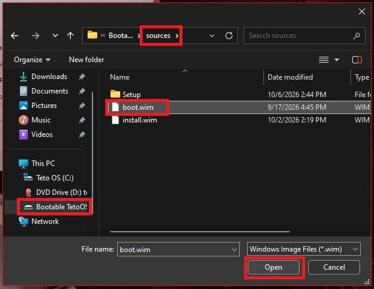
12. Click Add Entry (+): With the path set (e.g. E:\sources\boot.wim), click the green plus button (+) next to the browse icon to register the bootloader entry.
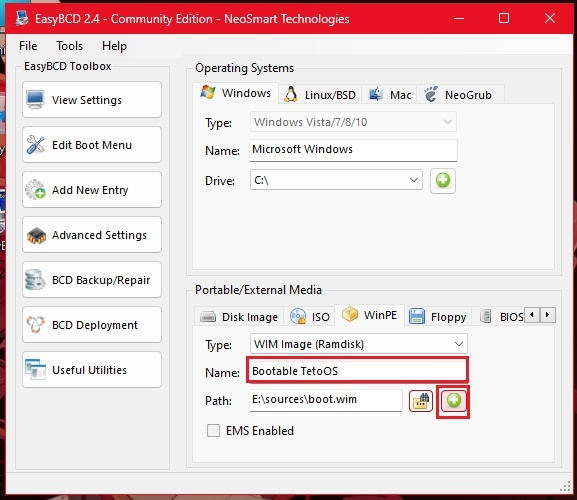
13. Restart and Select Bootable TetoOS: Restart your computer. During startup, the Windows Boot Manager screen will appear. Depending on your system (Legacy BIOS or UEFI), you may see either the classic black text menu or the modern blue graphical menu. Select Bootable TetoOS (using arrow keys or mouse) and press Enter to boot into the installer!
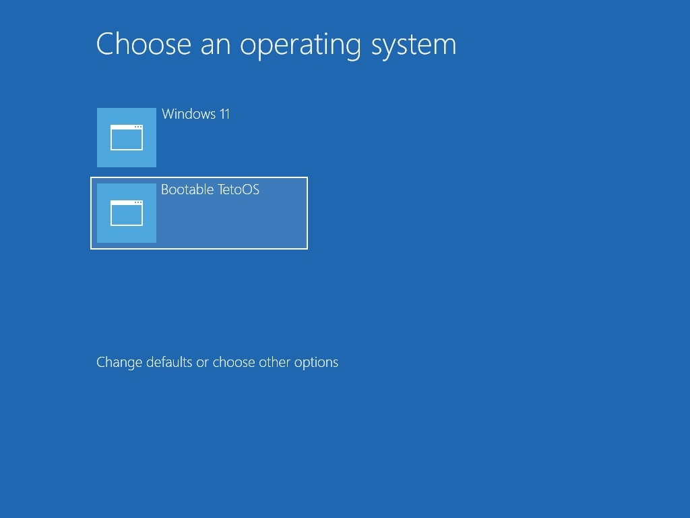
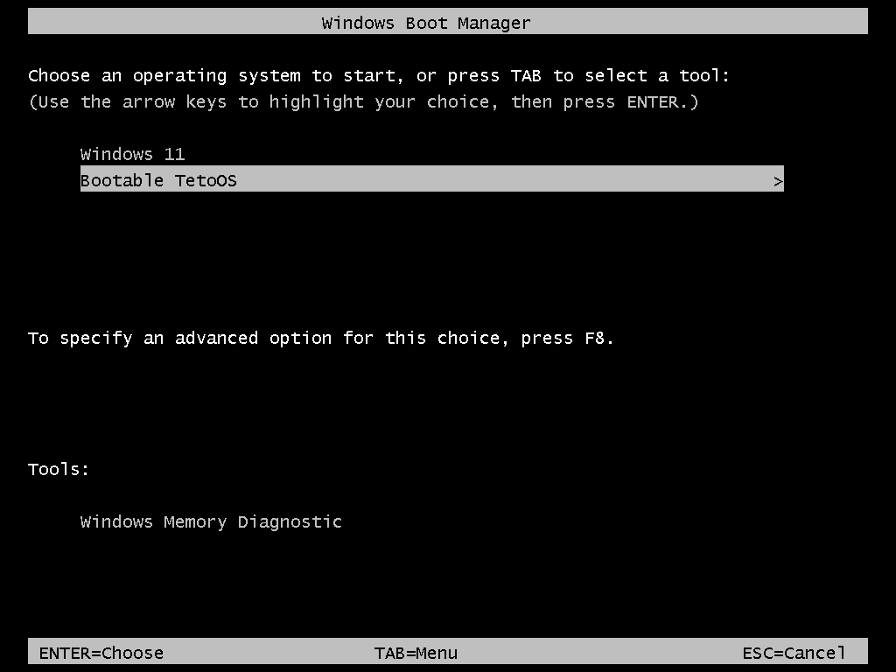
2. Booting the Installer
Restart your computer and boot from the bootable media. You will see the "welcome to tetoOS installation" screen with several action choices:
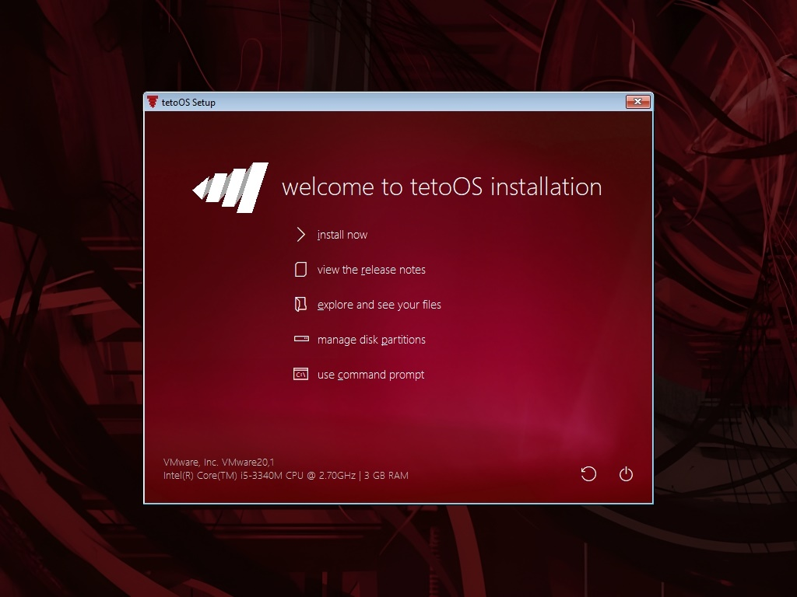
| Action | What it does |
|---|---|
| Install now | Starts the tetoOS installation right away. Click this to proceed! |
| View the release notes | Shows the release notes and changes of this OS version. |
| Explore and see your files | Opens a mini file explorer in case you need to copy or back up data quickly. |
| Manage disk partitions | Opens partition management to create, format or delete partitions. |
| Use command prompt | Opens CMD for advanced troubleshooting or diskpart commands. |
3. OS Variant & Setup Options
After clicking Install now, select the tetoOS edition you want to install from the list (e.g. Windows 11 Professional). You can also check the Install Microsoft Office box if you want Office pre-installed, select your installation language, and click Next.
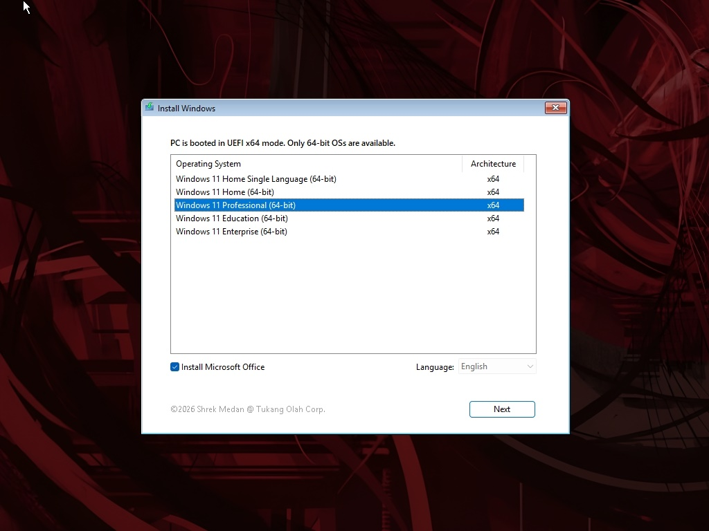
Advanced Option Advanced Bootloader Configuration (WinNTSetup)
WinNTSetup Step-by-Step:
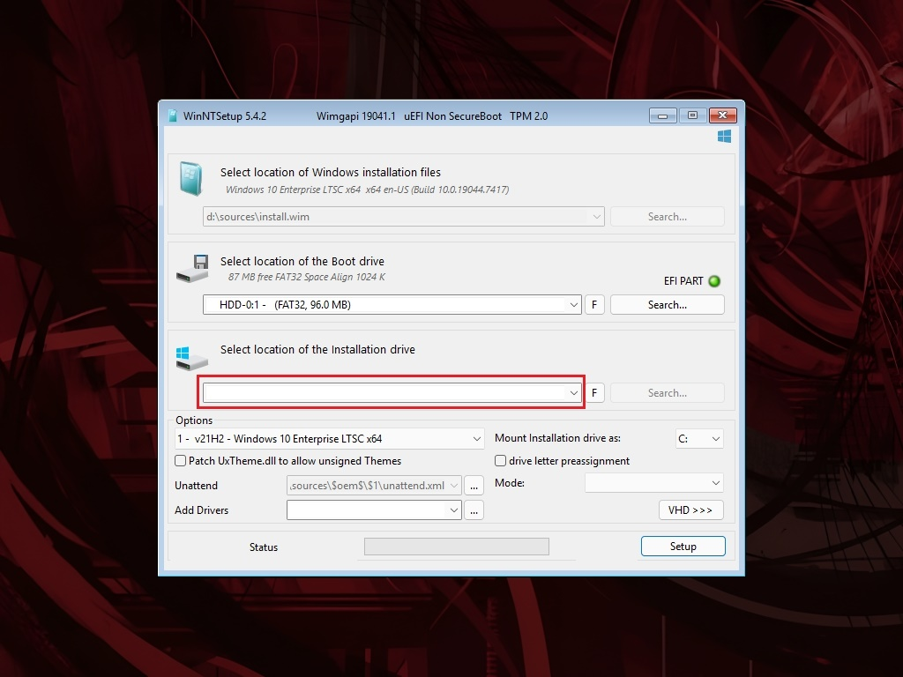
1. Verify Installation Files & Boot Drive:
In the first section, ensure the path to install.wim / install.esd points to the source image. Below it, verify the boot drive location (EFI system partition). WinNTSetup displays green indicators for compatibility.
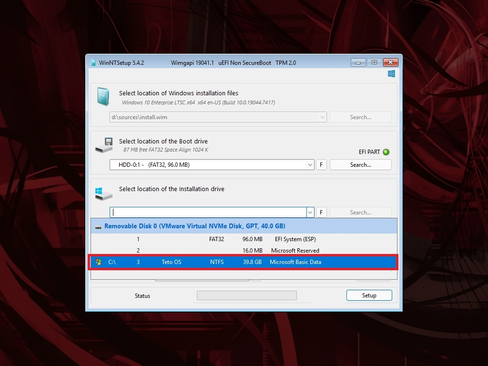
2. Select Target Drive Partition:
Under "Select the location of the installation drive", click Search... and carefully choose your target Windows partition (look for the partition labeled Install Here). This protects your other partitions, such as Linux root or swap.
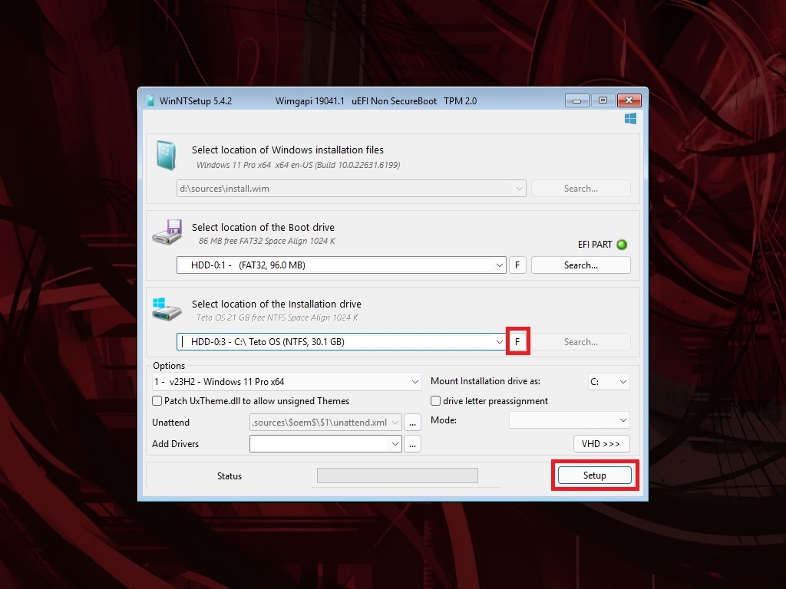
3. Click Setup to Begin:
Once both the boot drive and installation drive are selected, click the "F" button to the right of the installation drive field to format the partition. Then, click the Setup button at the bottom right. In the confirmation dialog that pops up, leave the default boot options checked and click OK to start extracting Windows.
4. Disk Selection
In standard installation mode, the "Where do you want to install Windows?" window will show your disks and partitions. Select the primary partition for tetoOS (you will easily recognize it by the Install Here label we assigned earlier), format or delete partitions if needed, and click Next.
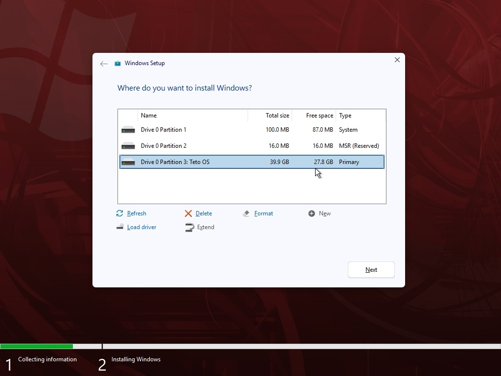
Formatting erases everything on that partition. Double-check the partition you pick and back up your important data first.
5. Feature Selection
While Windows files are getting prepared for installation, a custom tetoOS configuration window will appear. Here you can customize your installation preferences before ever landing on the desktop:
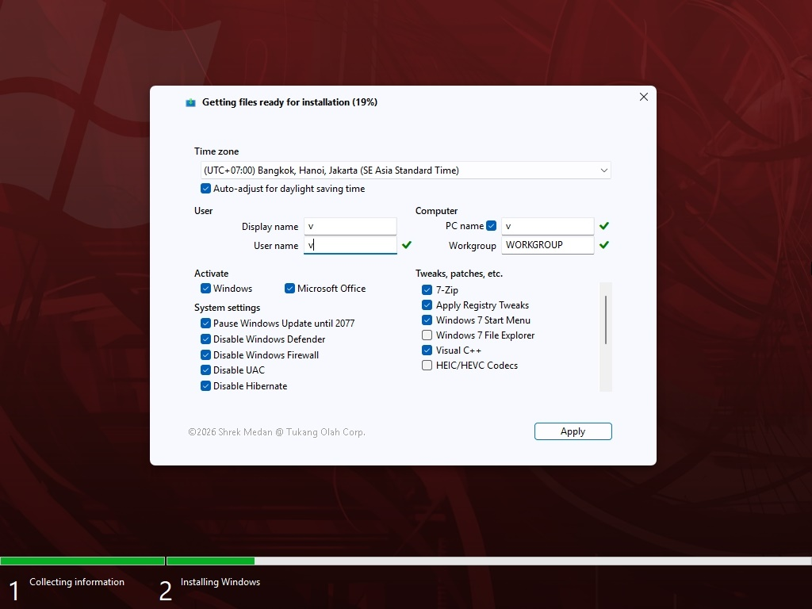
| Group | What you can set |
|---|---|
Time zone | Set your local time zone and toggle daylight saving time. |
User & Computer | Fill in your Display name, User name, PC name, and Workgroup. |
Activate | Tick boxes to automatically activate Windows and Microsoft Office. |
System settings | Pause Windows Update until 2077 (ticked by default), and options to disable Windows Defender, Firewall, UAC and Hibernate. |
Tweaks, patches, etc. | Essential tools and tweaks: 7-Zip, Registry Tweaks, Visual C++, HEIC/HEVC Codecs, and Windows 7 Start Menu / File Explorer style. |
After configuring all options to your liking, click the Apply button at the bottom right corner.
6. Finishing Up
Once you click Apply, the installer resumes copying files and applying your customized tweaks.
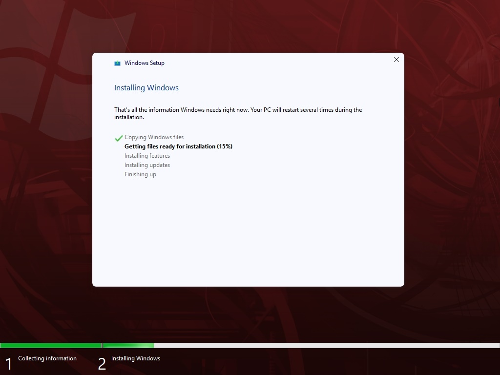
The process may take several minutes depending on your storage speed and selected tweaks.
Your computer will restart automatically several times. Once you arrive at the tetoOS Desktop, the installation is complete! You can now install device-specific drivers and enjoy your lightweight OS.